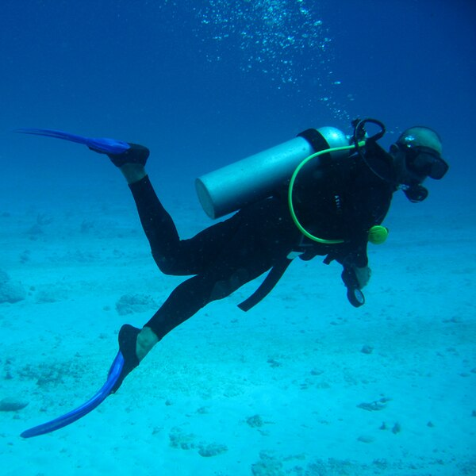
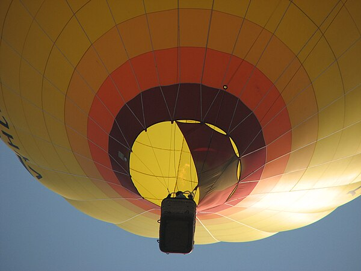
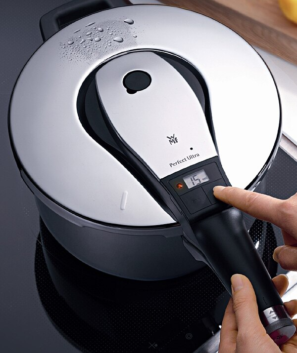
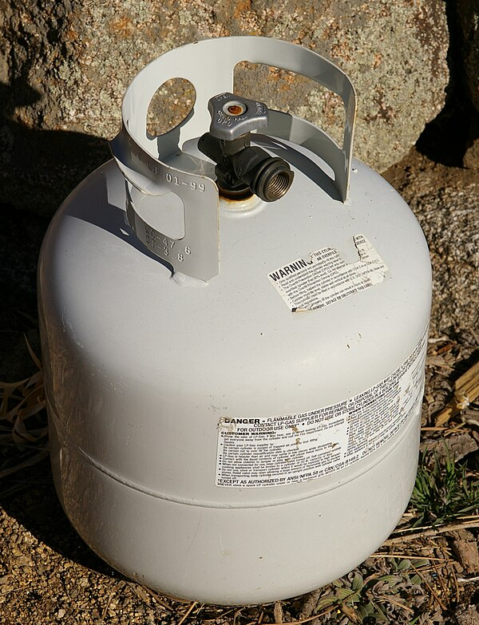

An animated PV = ties together
5 minutes — from memory, in your notebook. Work these on paper before scrolling on; you will use the same equations in the sim below.
A gas in a sealed container is made up of fast-moving particles that constantly bump
into the walls. Each collision pushes outward — that push, spread over the area of the
wall, is what we call
Three properties of the gas determine how strong that push is: how hot the gas is
(temperature, T), how much room it has (volume, V), and how many particles are present
(amount in moles, n). The
PV = nRT brings these together. R is a fixed number — the gas
constant — that makes the units balance.
Use the simulation below to see how flipping any one of T, V, or n changes pressure in real time.
The PV = nRT did not arrive in one step. It is the combination of three
empirical proportionalities established before the kinetic-molecular model was complete.
Boyle (1662) showed that P is inversely proportional to V at
constant temperature and amount of gas. Charles (1787) showed V is directly
proportional to T at constant P and n. Gay-Lussac
(1809) showed P is directly proportional to T at constant
V and n. Each was a separate empirical law. Together they
imply that PV / T is a constant for any fixed amount of gas; Avogadro's law
(V ∝ n at constant T and P) supplies the
proportionality, completing PV = nRT.
The combined equation is exact for an ideal gas. Real gases, especially polar or larger-molecule species like CO₂, deviate at low temperature and high pressure where the model's two assumptions break down. Switch the species selector below to CO₂ and toggle the HL Ideal-vs-Real graph to see the divergence.
The equation PV = nRT did not appear all at once. Four scientists, working
between 1662 and 1811, each found one of the proportionalities. About 50 years later, an
international meeting stitched their work together into the modern picture.
Avogadro's idea was ignored for 50 years. In 1860 the first international chemistry conference was held in Karlsruhe, Germany. About 140 chemists from across Europe attended. The Italian chemist Stanislao Cannizzaro handed out a pamphlet re-presenting Avogadro's argument, and the room was finally convinced. Scientific ideas do not always win on first publication — sometimes they need a community to agree.




The equation PV = nRT is a synthesis. Four scientists working across
roughly 150 years each contributed one of its proportionalities, and a fifth
international gathering finally stitched their work together into the modern molecular
picture you will use today.
Robert Boyle (1627–1691, Anglo-Irish), working with the instrument-maker Robert Hooke at Oxford, used a J-shaped glass tube and a column of mercury to show in 1662 that pressure and volume of a trapped gas are inversely related at constant temperature. Boyle was a founding member of the Royal Society and an early advocate of the experimental method. The French physicist Edme Mariotte independently published the same result in 1676, which is why the law is called Mariotte's law in French-speaking countries.
Jacques Charles (1746–1823, French) was a physicist and aeronaut who in 1783 made the first manned flight in a hydrogen balloon. Around 1787 he established that volume increases linearly with temperature at constant pressure, but he never published the result. His countryman Joseph Louis Gay-Lussac (1778–1850) printed the law in 1802 and named it after Charles. Gay-Lussac then went further: in 1809 he showed that pressure rises linearly with temperature at constant volume — the law that bears his own name. He, too, made high-altitude balloon ascents to study the atmosphere directly.
Amedeo Avogadro (1776–1856, Italian) hypothesised in 1811 that equal volumes of gases at the same temperature and pressure contain equal numbers of molecules — distinct from atoms. The idea was almost universally ignored for fifty years.
Avogadro's molecular hypothesis was rescued at the
Karlsruhe Congress, the first international chemistry conference, where
about 140 chemists from across Europe — French, German, British, Italian, Russian,
Scandinavian — gathered to settle competing systems of atomic weights. The Sicilian
chemist Stanislao Cannizzaro distributed a pamphlet re-presenting
Avogadro's argument. A young
n in PV = nRT.
The data did not change between 1811 and 1860. What changed was the social context: an international meeting, a clear written argument, and a receptive audience. Scientific consensus is not just about being right — it is about being heard.
Pressure, volume, temperature, and amount of gas are linked through the equation
PV = nRT.
Adapted from the IB Chemistry Guide 2025, Structure 1.5 (Ideal Gases).
PV = nRT) relate pressure, volume, temperature, and amount of
gas. All temperatures must be in kelvin.
P · V = n ·
where P is pressure, V is volume, n is amount of gas in moles, T is absolute temperature in kelvin, and R is the molar gas constant. The four individual gas laws — Boyle, Charles, Gay-Lussac, and Avogadro — are special cases of this single relationship.
PV = nRT to predict how one variable changes when another is
adjusted.
Loading the simulation… enable JavaScript to run it.
Question: A 2.0 L container holds 0.5 mol of N₂ at 300 K. Calculate the pressure of the gas.
PV = nRT, so P = nRT / V.V = 2.0 L = 2.0 × 10⁻³ m³ P = (0.5 × 8.314 × 300) / (2.0 × 10⁻³)
P = 6.24 × 10⁵ Pa ≈ 624 kPa.
V = nRT / P = (0.25 × 8.314 × 250) / (150 × 10³) = 3.46 × 10⁻³ m³ ≈ 3.46 L
PV = nRT to V = nRT / P.
"Gas pressure is caused by gas particles pushing each other."
✗ Wrong: particles only exert measurable force when they collide with the container walls, not when passing each other.
✓ Right: pressure is the force per unit area from particle-wall collisions. Inter-particle collisions redistribute energy but don't directly cause container pressure.
{kind=link}
{kind=link}
{kind=link}
{kind=link}